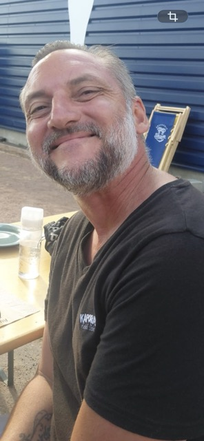

Je suis actuellement en formation dans le domaine du développement web et je découvre progressivement les technologies du web, notamment HTML,CSS et JavaScriptp.
Mon objectif est de développer mes compétences et d'obtenir, à la fin de ma formation, le diplôme de Développeur Web et Web Mobile.
Je souhaite ensuite mettre mes connaissances en pratique et continuer à progresser dans le développement de sites et d'applications web.
| Compétence | Niveau |
|---|---|
| HTML | Débutant |
| kodex | débutant |
HTML
CSS
JavaScript
Développer la partie front-end d'une application web ou web mobile
Développer la partie back-end d'une application web ou web mobile
En début de parcours
En millieu de parcours
En fin de parcours
Je m'appelle Jordan et je suis actuellement en formation dans le domaine du développement web.
Je débute dans la création de sites Internet et j'apprends progressivement à maîtriser HTML, CSS et JavaScript.
Cette formation me permet de développer mes compétences, de réaliser mes premiers projets et de mieux comprendrele fonctionnement du développement web.
Mon objectif est d'obtenir le diplôme de Développeur Web et Web Mobile et de poursuivre mon évolution dans ce domaine.
Je découvre progressivement HTML, CSS et JavaScript afin de développer mes compétences en création de sites et d'applications web.
Mon objectif est de réaliser progressivement des projets plus complets et de gagner en autonomie dans le développement web.
Je développe progressivement mes compétences dans le domaine du développement web. J'apprends à utiliser HTML et CSS pour créer et mettre en forme des pages web.
J'apprends progressivement à maîtriser HTML, CSS et JavaScript afin de créer des sites web modernes et interactifs.
Chaque projet me permet de mettre en pratique mes connaissances, de progresser et de développer mon autonomie.